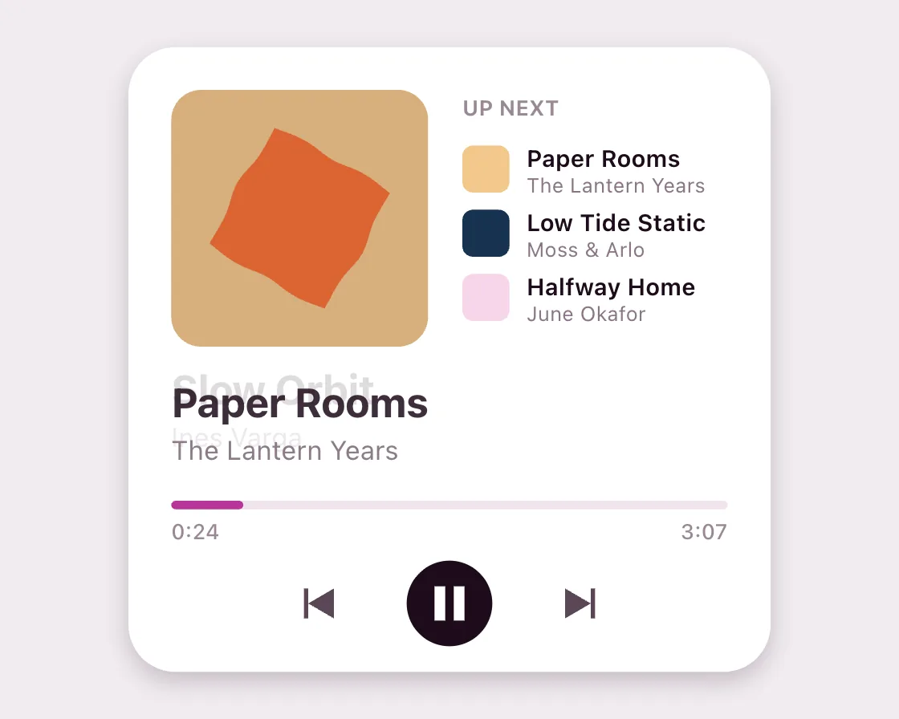

Shape morph
Shape morph is a Canvas effect: every shape is the same 160 polar radii. One plain JavaScript file with no dependencies; add it with npx motion-library add shape-morph.

Open it live, tune it and copy the code
What is Shape morph?
Skipping a track morphs the album cover into the next track’s shape and colour as the title crossfades.
How does Shape morph work?
Every shape is stored as 160 distances from the centre at fixed angles, so any shape blends into any other point by point; equal mean radius keeps the area steady.
How do I add Shape morph to my website?
- In your project folder, run
npx motion-library add shape-morph. It writesanimations/shape-morph.js. Needs Node 18 or newer. - Import it and call it with a container element that has a size:
import fx from './animations/shape-morph.js'; const stop = fx(document.querySelector('#hero')); - Call
stop()to clean up, for example when a component unmounts.
Every setting below is also a flag, so you can install it already tuned: npx motion-library add shape-morph --hold 4000.
What settings can I tweak?
| Setting | Flag | Default | Range | Step |
|---|---|---|---|---|
| Hold (ms) | --hold | 1600 | 300 to 4000 | 50 |
| Morph (ms) | --morph | 600 | 200 to 1500 | 10 |
Specifications
- Renderer
- Canvas 2D
- Category
- Morph & SVG
- Dependencies
- None
- File size
- 7.5 KB, unminified
- Interactive
- No: it plays on its own
- Reduced motion
- Respects prefers-reduced-motion
- Licence
- MIT-0: use it anywhere, no credit needed
Source code
// Shape morph: every shape is stored as 160 distances from the centre at fixed angles, so any shape blends into any other point by point. In a music player each track has its own cover shape, and skipping to the next track morphs the cover instead of swapping a picture.
const PARAMS = { hold: 1600, morph: 600 };
export default function (stage) {
const reduce = matchMedia('(prefers-reduced-motion: reduce)').matches;
const canvas = document.createElement('canvas');
canvas.style.cssText = 'position:absolute;inset:0;width:100%;height:100%;display:block';
stage.append(canvas);
const ctx = canvas.getContext('2d');
let W = 0, H = 0;
const resize = () => { const d = Math.min(devicePixelRatio, 2); W = stage.clientWidth; H = stage.clientHeight; canvas.width = W * d; canvas.height = H * d; ctx.setTransform(d, 0, 0, d, 0, 0); };
const ro = new ResizeObserver(resize); ro.observe(stage); resize();
const NP = 160, TAU = Math.PI * 2;
// radius of a polygon along angle a: nearest edge hit by a ray from the centre
const polyR = verts => Array.from({ length: NP }, (_, i) => {
const a = (i / NP) * TAU, dx = Math.cos(a), dy = Math.sin(a); let best = Infinity;
for (let k = 0; k < verts.length; k++) {
const [x1, y1] = verts[k], [x2, y2] = verts[(k + 1) % verts.length], ex = x2 - x1, ey = y2 - y1;
const den = dx * ey - dy * ex; if (Math.abs(den) < 1e-9) continue;
const t = (x1 * ey - y1 * ex) / den, u = (x1 * dy - y1 * dx) / den;
if (t > 0 && u >= 0 && u <= 1) best = Math.min(best, t);
}
return best;
});
const ngon = (n, rOut, rIn = null, rot = -Math.PI / 2) => {
const v = [], m = rIn ? n * 2 : n;
for (let i = 0; i < m; i++) { const a = rot + (i / m) * TAU, r = rIn && i % 2 ? rIn : rOut; v.push([Math.cos(a) * r, Math.sin(a) * r]); }
return v;
};
const fn = f => Array.from({ length: NP }, (_, i) => f((i / NP) * TAU));
// scale every shape to the same root-mean-square radius so area feels constant
const norm = r => { const rms = Math.sqrt(r.reduce((s, x) => s + x * x, 0) / r.length); return r.map(x => x / rms); };
const tracks = [
{ r: norm(fn(a => 1 + 0.22 * Math.cos(6 * a))), bg: '#2a0f26', fg: '#e57cc4', t: 'Slow Orbit', a: 'Ines Varga', len: 214 },
{ r: norm(polyR([[-1, -1], [1, -1], [1, 1], [-1, 1]])), bg: '#f3c98b', fg: '#d9601a', t: 'Paper Rooms', a: 'The Lantern Years', len: 187 },
{ r: norm(polyR(ngon(5, 1, 0.5))), bg: '#16324f', fg: '#9fc3e8', t: 'Low Tide Static', a: 'Moss & Arlo', len: 242 },
{ r: norm(fn(() => 1)), bg: '#f7d6ea', fg: '#b8359a', t: 'Halfway Home', a: 'June Okafor', len: 199 },
{ r: norm(fn(a => 1 + 0.16 * Math.sin(3 * a + 1) + 0.1 * Math.cos(5 * a))), bg: '#0e4d46', fg: '#9fe0d6', t: 'Greenhouse', a: 'Ines Varga', len: 228 },
];
const mix = (c1, c2, t) => { const p = c => [1, 3, 5].map(i => parseInt(c.slice(i, i + 2), 16)); const a = p(c1), b = p(c2); return `rgb(${a.map((v, i) => Math.round(v + (b[i] - v) * t)).join(',')})`; };
const ease = t => t < 0.5 ? 4 * t * t * t : 1 - Math.pow(-2 * t + 2, 3) / 2; // in-out cubic: the cover is on screen the whole time
const rr = (x, y, w, h, r) => { ctx.beginPath(); ctx.roundRect ? ctx.roundRect(x, y, w, h, r) : ctx.rect(x, y, w, h); };
const font = (w, s) => `${w} ${s}px system-ui, -apple-system, sans-serif`;
let raf; const t0 = performance.now();
function frame(now) {
const step = PARAMS.hold + PARAMS.morph, el = now - t0, k = Math.floor(el / step) % tracks.length, local = (el % step - PARAMS.hold) / PARAMS.morph;
const p = ease(Math.max(0, Math.min(1, local))), A = tracks[k], B = tracks[(k + 1) % tracks.length];
const s = Math.min(W / 420, H / 320);
ctx.setTransform(1, 0, 0, 1, 0, 0); ctx.scale(canvas.width / W, canvas.height / H);
ctx.fillStyle = '#f1ecf0'; ctx.fillRect(0, 0, W, H);
ctx.translate(W / 2 - 210 * s, H / 2 - 160 * s); ctx.scale(s, s);
// player card
ctx.save(); ctx.shadowColor = 'rgba(42,15,38,.22)'; ctx.shadowBlur = 30; ctx.shadowOffsetY = 12;
rr(60, 14, 300, 292, 22); ctx.fillStyle = '#fff'; ctx.fill(); ctx.restore();
// cover: background and shape colours blend with the morph
rr(80, 34, 120, 120, 14); ctx.save(); ctx.clip(); ctx.fillStyle = mix(A.bg, B.bg, p); ctx.fillRect(80, 34, 120, 120);
const R = 36;
if (reduce) { // reduced motion: the two covers crossfade, the outline does not morph or turn
[[A, k, 1 - p], [B, k + 1, p]].forEach(([tr, n, al]) => {
ctx.globalAlpha = al; ctx.beginPath();
for (let i = 0; i <= NP; i++) { const j = i % NP, r = tr.r[j] * R, ang = (j / NP) * TAU + n * 0.6; const x = 140 + Math.cos(ang) * r, y = 94 + Math.sin(ang) * r; i ? ctx.lineTo(x, y) : ctx.moveTo(x, y); }
ctx.fillStyle = tr.fg; ctx.fill();
});
ctx.globalAlpha = 1; ctx.restore();
} else {
ctx.beginPath();
const rot = (k + p) * 0.6;
for (let i = 0; i <= NP; i++) { const j = i % NP, r = (A.r[j] + (B.r[j] - A.r[j]) * p) * R, ang = (j / NP) * TAU + rot; const x = 140 + Math.cos(ang) * r, y = 94 + Math.sin(ang) * r; i ? ctx.lineTo(x, y) : ctx.moveTo(x, y); }
ctx.fillStyle = mix(A.fg, B.fg, p); ctx.fill(); ctx.restore();
}
// up next list on the right
ctx.fillStyle = '#9a8996'; ctx.font = font(650, 10); ctx.fillText('UP NEXT', 216, 46);
for (let i = 1; i <= 3; i++) { const tr = tracks[(k + i) % tracks.length], y = 60 + (i - 1) * 30; ctx.fillStyle = tr.bg; rr(216, y, 22, 22, 5); ctx.fill(); ctx.fillStyle = '#1d0b1a'; ctx.font = font(600, 11); ctx.fillText(tr.t, 246, y + 10); ctx.fillStyle = '#8a7686'; ctx.font = font(400, 9.5); ctx.fillText(tr.a, 246, y + 22); }
// title crossfades with a short rise
ctx.save(); ctx.font = font(720, 19);
const rise = reduce ? 0 : 6; // reduced motion: the title only crossfades
ctx.globalAlpha = 1 - p; ctx.fillStyle = '#1d0b1a'; ctx.fillText(A.t, 80, 186 - p * rise); ctx.font = font(400, 12.5); ctx.fillStyle = '#7a6676'; ctx.fillText(A.a, 80, 206 - p * rise);
ctx.globalAlpha = p; ctx.font = font(720, 19); ctx.fillStyle = '#1d0b1a'; ctx.fillText(B.t, 80, 192 - p * rise - (6 - rise)); ctx.font = font(400, 12.5); ctx.fillStyle = '#7a6676'; ctx.fillText(B.a, 80, 212 - p * rise - (6 - rise));
ctx.restore();
// progress
const prog = Math.min(1, (el % step) / step) * (1 - p), cur = tracks[p > 0.5 ? (k + 1) % tracks.length : k];
ctx.fillStyle = '#f1e4ee'; rr(80, 226, 260, 4, 2); ctx.fill();
ctx.fillStyle = '#b8359a'; rr(80, 226, Math.max(4, 260 * prog), 4, 2); ctx.fill();
ctx.fillStyle = '#9a8996'; ctx.font = font(500, 10);
const secs = Math.floor(prog * cur.len); ctx.fillText(`${Math.floor(secs / 60)}:${String(secs % 60).padStart(2, '0')}`, 80, 244);
ctx.textAlign = 'right'; ctx.fillText(`${Math.floor(cur.len / 60)}:${String(cur.len % 60).padStart(2, '0')}`, 340, 244); ctx.textAlign = 'left';
// controls: previous, pause, next (next button pressed as the morph starts)
const press = local > -0.15 && local < 0.25 ? 0.9 : 1;
ctx.fillStyle = '#1d0b1a'; ctx.beginPath(); ctx.arc(210, 274, 20, 0, TAU); ctx.fill();
ctx.fillStyle = '#fff'; ctx.fillRect(203, 266, 5, 16); ctx.fillRect(212, 266, 5, 16);
const tri = (x, y, dir, sc = 1) => { ctx.save(); ctx.translate(x, y); ctx.scale(sc, sc); ctx.beginPath(); ctx.moveTo(-6 * dir, -7); ctx.lineTo(6 * dir, 0); ctx.lineTo(-6 * dir, 7); ctx.fill(); ctx.fillRect(dir > 0 ? 6 : -8, -7, 2, 14); ctx.restore(); };
ctx.fillStyle = '#5b4657'; tri(150, 274, -1); tri(270, 274, 1, press);
raf = requestAnimationFrame(frame);
}
raf = requestAnimationFrame(frame);
return () => { cancelAnimationFrame(raf); ro.disconnect(); canvas.remove(); };
}